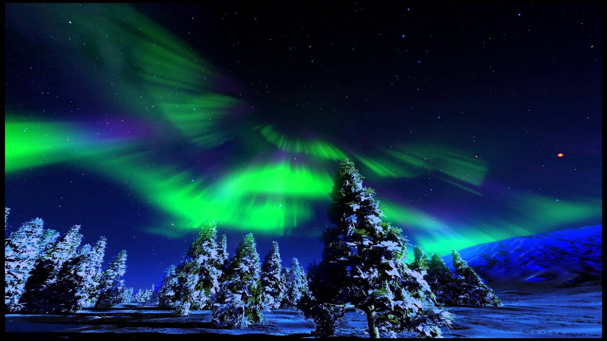

about
当館について
季節彩る星空を、見上げて。
-
アースシンフォニー
命の惑星「地球」を見つめる。わたしたちがすむ地球はこんなにもすばらしかった。美しく迫力のある映像を詰め込んだ全天映像詩。オーロラ、流星群、雪や雲。地球を包む大気が起こす美しい現象を360度に広がるドームスクリーンで体感しましょう。宇宙と神話の世界を描くアーティスト『KAGAYA』のCGと、人気声優アーティスト水樹奈々が、癒しのナレーションで空の物語へと誘います。巡る季節の星空を壮大で心地よい音楽とともにお楽しみください。 -
竜神
尾張の国一宮村はどこでもあるようなお百姓さんばかりの小さな村でした。ある年の夏、一滴の雨も降らない日が続き、川や池の水まで干上がって、村のどこにも 水が無くなってしまったのです。さて困り果てた村人達を救ったのは?
平安時代に村人を救ったと伝えられる竜神のお話です。一宮の民話が、地元の作家や画家の協力で、プラネタリウムのドームによみかがえりました。